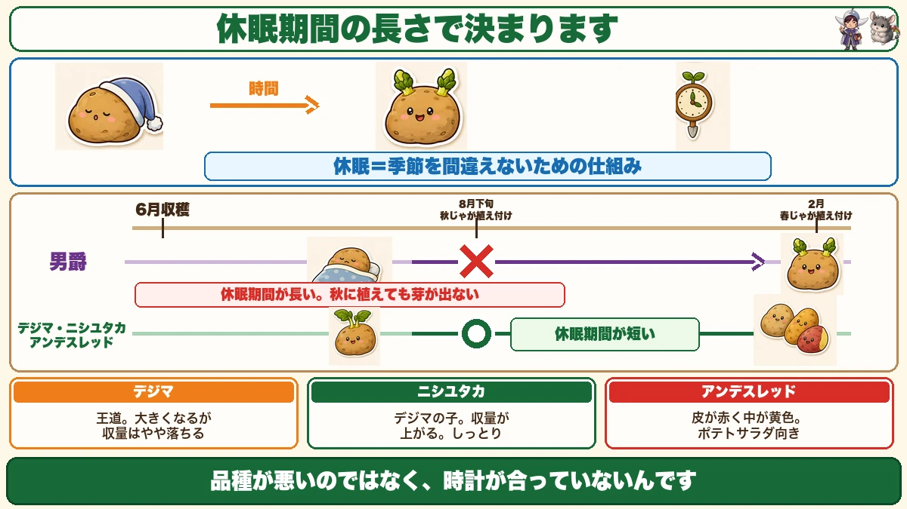
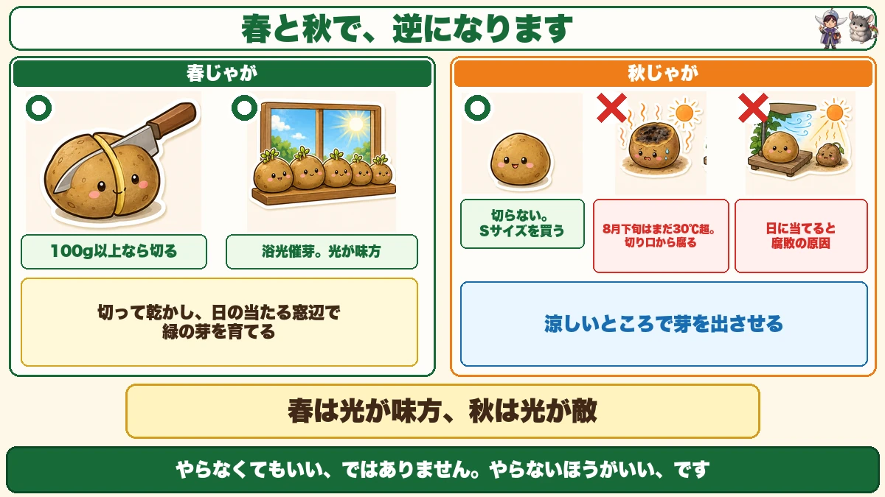
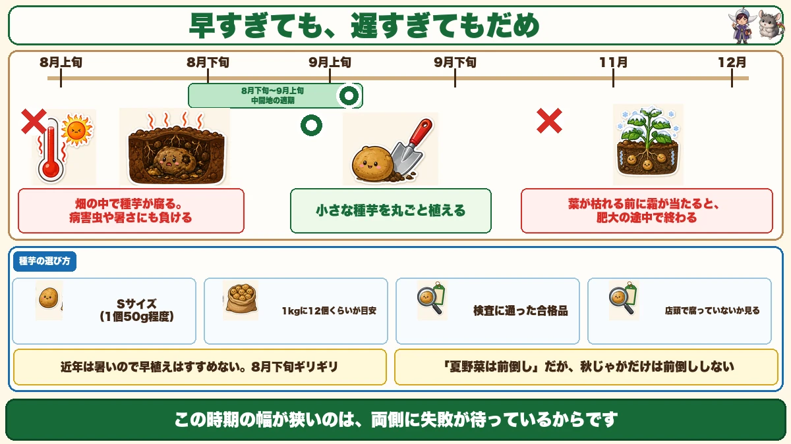

男爵は秋じゃがに向きません🥔 休眠期間が長いからです
🥔「春と同じ品種でいいと思っていた」
🥔「植えたのに、芽が出なかった」
🥔「種芋が畑の中で腐ってしまった」
どうも、8150（えいこう）です🌱 家庭菜園歴8年、理科の教員免許を持っていて、有機・無農薬で野菜を育てています。
8月の下旬から、秋じゃがいもが始まります。
そして★秋じゃがは、春じゃがとほとんど逆のことをやります。
先に、この記事でいちばん言いたいことを言っておきます。
★男爵は、秋じゃがには向きません。
理由は、味でも大きさでもありません。★休眠期間が長いからです☺️
★★休眠期間という言葉
じゃがいもは、しばらく眠ります
まず、この言葉から説明させてください。
★じゃがいもには、休眠期間があります。
収穫したあと、しばらくのあいだ★芽が出ない期間のことです。
台所に置いておいたじゃがいもから、ある日突然芽が出てくることがありますよね。★あれは、休眠期間が明けたということです。

なぜ、そんな仕組みがあるのか
理由を考えると、納得できます。
じゃがいもは、地下の茎が太ったものです。★掘り上げられなければ、そのまま土の中で冬を越します。
もし穫れたその日から芽が出てしまったら、★冬に芽を出して枯れることになります。
だから、しばらく眠る。★休眠は、季節を間違えないための仕組みです。
★★そして、品種で長さが違います
ここが今日の本題です。
★休眠期間の長さは、品種によって違います。
- ★男爵 … 休眠期間が長い
- ★デジマ、ニシユタカ、アンデスレッド … 休眠期間が短い
★だから、男爵は秋に使えません
秋じゃがは、8月下旬に植えます。
★春に穫った男爵は、そのころまだ眠っています。
植えても、芽が出ない。★品種が悪いのではなく、時計が合っていないんです。
★秋じゃがは、休眠期間の短い品種でないと成立しません。
秋じゃが用の品種、3つ
★デジマ（出島）── 王道
★秋じゃがでいちばん有名な品種です。
★春でいえば男爵にあたる、王道中の王道です。迷ったらこれで間違いありません。
- ★大きくなる
- ★ホクホクした食感
- ★ただし、収量はやや落ちる傾向があります
★ニシユタカ ── 収量が上がる
私がおすすめしたいのがこちらです。
★ニシユタカは、デジマを親に持つ品種です。
名前のとおり、★デジマの収量をさらに上げた品種として作られました。
- ★煮崩れしにくい
- ★食感はメークインに近く、しっとりしている
- ★収量が上がる
★デジマを作ったことがあるなら、次はこちらを試す価値があります。
★アンデスレッド ── 見た目が変わる
★皮が赤くて、中が黄色いじゃがいもです。
- ★食感はキタアカリに似ている
- ★ポテトサラダに向いています
- ★掘ったときに子どもが喜びます
前に春じゃがの記事で、アンデスレッドを紹介しました。★実は、もともと秋植え用として知られている品種です。★春でも秋でも作れる、便利な品種ですね。
もうひとつ、さんじゅう丸
★見た目がよく、味もよく、病気にも強い品種です。
ただ★ホームセンターに置いていないことが多いので、見つけたら買い、という位置づけになります。
★★種芋は「必ず買う」
検査に通ったものを
ここは強く言っておきます。
★種芋は、必ず検査に通った合格品を使ってください。
★じゃがいもは、病気がこわい野菜です。
前にモザイク病の話をしました。ウイルスは治せません。★病気を持った種芋を植えると、そこから畑に持ち込むことになります。
★食用に売られているじゃがいもを植えないでください。種芋用として売られているものを買います。
★春に穫ったものを使えるか
よく聞かれる質問だと思うので、正直に書きます。
★基本は、秋じゃが用の種芋を買うのがいちばんです。
そのうえで、どうしても試したい方へ。★休眠期間の短い品種なら、可能性はあります。
- ★アンデスレッド … ★秋じゃが用として売られているくらいなので、いちばん向いています
- ★デストロイヤー、キタアカリ … ★休眠期間が短くも長くもない。中くらいです
- インカのめざめ … 休眠は短いのですが、★作りづらく収量が上がらず、病気にも弱い
★デストロイヤーは「使えなくはない」という位置づけです。秋じゃが専用品種ではありません。
★★春と秋で、逆になること

①種芋を、切らない
春じゃがの記事で、こうお伝えしました。
★100g以上なら切る。1個から12倍にできる。
★秋は、逆です。
★種芋は切らずに、丸ごと植えてください。
理由は、暑さです
なぜか。
★秋じゃがを植える時期は、まだ暑いからです。
切ると、断面ができます。春なら涼しいので、そこにかさぶたができて守られます。
でも★8月下旬の畑は、まだ30℃を超えます。★切り口から腐ります。
★カットしたあと高温が続くので、腐敗しやすいんです。
★だから、Sサイズを買う
切らないなら、大きい芋はもったいないですよね。答えは簡単です。
★最初から、小さいSサイズを買います。
- ★1個50g程度が理想
- ★1kgの袋に12個くらい入っているものが目安
- ★Sサイズが多く入っている袋を選ぶ
★大きいものが入っていると、切るか、そのまま植えるかで迷うことになります。最初から小さいものを選べば、迷いません。
★店頭で、腐っていないか見る
もうひとつ注意があります。
★店頭に置いてある時点で、すでに腐っている場合があります。
夏の店内は暑いです。★袋の中を見て、傷んでいるものが混じっていないか確認してください。
②★★日に当てない
春じゃがでは、浴光催芽（よっこうさいが）をしました。
★日の当たる窓辺に3週間から1か月置いて、強い緑の芽を出させる。
★秋は、これをやりません。
やらないほうがいい、です
「やらなくてもいい」ではありません。
★やらないほうがいい、です。
理由は同じで、★暑いからです。★日に当てていると、腐敗の原因になります。
★春は光が味方、秋は光が敵。ここが完全に逆になります。
★涼しいところで、芽を出させる
では何もしないのか。そうではありません。
★涼しいところに置いて、芽を出させてください。
- ★日中に日が当たるような、暑い場所には置かない
- ★できれば、芽が出てから植える
★どうしても、という方は、木箱や発泡スチロールに土を入れて芽出しする方法もあります。ただ★そこまでしなくても大丈夫です。
なぜ芽を出しておくのか
理由があります。
★秋じゃがは、霜が降りるまでの生育期間が短いんです。
春じゃがは、植えてから6月まで4か月あります。★秋じゃがは、11月から12月の霜までしかありません。
★芽が出た状態で植えれば、その分だけ芋が太る時間が増えます。
★短い期間を、少しでも長く使う工夫です。
★★植える時期は、幅が狭い
8月下旬から9月上旬
3つ目の注意点です。
★植えるのは、8月下旬から9月上旬。中間地の場合です。
★寒冷地は、早めに植えてください。霜が早く降りるので、遅いと間に合いません。

★早すぎても、遅すぎてもだめ
この時期の幅が狭いのには、理由があります。★両側に失敗が待っているからです。
★早すぎると
- ★8月でも30℃を超える日があります
- ★畑の中で種芋が腐ります
- 病害虫にも、暑さにも負けます
★遅すぎると
- 収穫は11月から12月になります
- ★葉がまだ枯れていないのに、霜が当たる
- ★芋が太っている途中で、終わってしまいます
春と同じ構図です
前に春じゃがの記事で、こうお伝えしました。
★2月3月に植えると生育期間が長く、収量が上がる。4月5月に植えると収量が落ちる。
★秋も同じです。ただし秋は、早植えのリスクが「腐敗」という形で出ます。
★年々、暑くなっています
判断のヒントをひとつ。
★近年は年々暑くなっているので、早植えはおすすめしません。
★8月下旬のギリギリくらい。それが中間地の目安です。
前に3月号で「夏野菜は前倒しの時代」とお伝えしました。★秋じゃがだけは、前倒ししてはいけません。相手が暑さだからです。
春じゃがと、並べてみる
この記事の要点
- ★★男爵は秋じゃがに向かない。★休眠期間が長いから
- ★休眠期間＝収穫後、しばらく芽が出ない期間
- ★休眠は、季節を間違えないための仕組み
- ★★休眠期間の長さは品種で違う。★秋じゃがは短い品種でないと芽が出ない
- 秋じゃが用の3つ＝★デジマ（王道・収量はやや落ちる）／★ニシユタカ（デジマの子・収量が上がる）／★アンデスレッド（皮が赤く中が黄色）
- ★アンデスレッドはもともと秋植え用。★春でも秋でも作れる
- ★★種芋は必ず検査に通った合格品を買う。★食用のじゃがいもを植えない
- 春に穫ったものを使うなら★休眠が短い品種を。★アンデスレッドがいちばん向く
- ★デストロイヤー・キタアカリは休眠が中くらい。「使えなくはない」
- ★★春と秋で逆になることが2つある
- ①★種芋を切らない。★8月下旬はまだ30℃超で、切り口から腐る
- ★最初からSサイズ（1個50g程度）を買う。★1kgに12個くらいが目安
- ★店頭で腐っていないか見る
- ②★★日に当てない。★浴光催芽は「やらないほうがいい」
- ★春は光が味方、秋は光が敵
- ★涼しいところで芽を出させ、★芽が出てから植える
- 理由は★霜までの生育期間が短いから。★芽が出ていれば芋が太る時間が増える
- ★植えるのは8月下旬〜9月上旬（中間地）。★寒冷地は早めに
- ★早すぎると畑で種芋が腐る。★遅すぎると霜で肥大が止まる
- ★近年は暑いので早植えはすすめない。★8月下旬ギリギリ
- ★「夏野菜は前倒し」だが、★秋じゃがだけは前倒ししない
全部やろうとしなくて大丈夫です。まずはお店で種芋の袋を手に取って、★Sサイズがたくさん入っているものを選んでください。それだけで、腐らせる失敗がほぼ防げます🥔
次回は、防虫ネットの話。秋冬野菜は、張り方ひとつで結果が変わります🕸️
ここまで読んでくださって、ありがとうございました。
秋植えアンデスレッド
秋に植えられる数少ない品種です。休眠期間が短いので、9月に植えても芽が出ます。
![[商品価格に関しましては、リンクが作成された時点と現時点で情報が変更されている場合がございます。]](https://hbb.afl.rakuten.co.jp/hgb/565b74ce.f30a48e7.565b74cf.8a827250/?me_id=1368676&item_id=10000255&pc=https%3A%2F%2Fthumbnail.image.rakuten.co.jp%2F%400_mall%2Farakawaseed%2Fcabinet%2Fcompass1564563596.jpg%3F_ex%3D240x240&s=240x240&t=picttext "[商品価格に関しましては、リンクが作成された時点と現時点で情報が変更されている場合がございます。]")

じゃがいもシリカ
春は切って植えますが、秋は切りません。どうしても切るときだけ、切り口の保護に。
![[商品価格に関しましては、リンクが作成された時点と現時点で情報が変更されている場合がございます。]](https://hbb.afl.rakuten.co.jp/hgb/565b74ce.f30a48e7.565b74cf.8a827250/?me_id=1368676&item_id=10000491&pc=https%3A%2F%2Fthumbnail.image.rakuten.co.jp%2F%400_mall%2Farakawaseed%2Fcabinet%2Fcompass1582111506.jpg%3F_ex%3D240x240&s=240x240&t=picttext "[商品価格に関しましては、リンクが作成された時点と現時点で情報が変更されている場合がございます。]")
穴あきマルチ
秋は暑い時期に植えます。地温を下げたいので、植え付け後しばらくは敷きわらと併用してください。
![[商品価格に関しましては、リンクが作成された時点と現時点で情報が変更されている場合がございます。]](https://hbb.afl.rakuten.co.jp/hgb/55521906.a3595d78.55521907.92994d18/?me_id=1225177&item_id=10035007&pc=https%3A%2F%2Fthumbnail.image.rakuten.co.jp%2F%400_mall%2Fssn%2Fcabinet%2F02584092%2F07223762%2F4980356008386_1.jpg%3F_ex%3D240x240&s=240x240&t=picttext "[商品価格に関しましては、リンクが作成された時点と現時点で情報が変更されている場合がございます。]")
移植ごて
植え穴を掘る道具。深さは春より浅めで大丈夫です。

あわせて読みたい